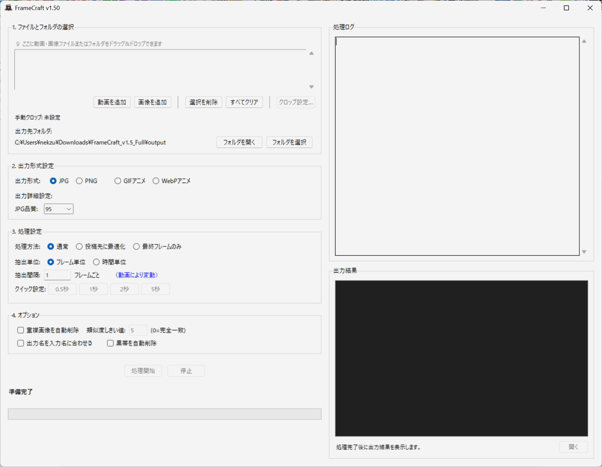

正確に抽出する
フレーム単位でも、秒単位でも。
- フレーム / 秒の間隔指定フレームごと・秒ごとの間隔で正確に抽出
- 自動FPS検出動画に合わせて最適な抽出に
- 最終フレームのみ出力動画生成で次の動画をつなぐ始点用に
Frame Craft
動画フレーム抽出・変換
フレーム番号や秒数の間隔を指定して、動画から画像を正確に抽出。GIF・WebPアニメへの変換や、Pixivうごイラなど投稿先に合わせた出力にも対応したWindows向けツールです。
体験版：1動画400枚まで・透かし付き
v1.50 公開 2026.06.21
クリックで拡大
01 できること
欲しいフレームを正確に取り出し、そのままアニメーションや投稿用の形式に。複数の動画もまとめて処理できます。
フレーム単位でも、秒単位でも。
動画や連番画像を、そのまま使える形式へ。
大量の動画・フレームも、手間をかけずに。
02 使い方
「動画を追加」ボタン、またはドラッグ＆ドロップで追加。
画像・アニメの形式や、抽出間隔を設定。
「処理開始」で抽出・変換を実行。
03 動作環境
04 体験版・購入
Frame Craft / Windows
v1.50 · ZIPファイル
ご希望の購入方法をお選びください。
個人での商用利用は、本製品の購入で利用可能です。
企業での商用利用は、メールでご相談ください。